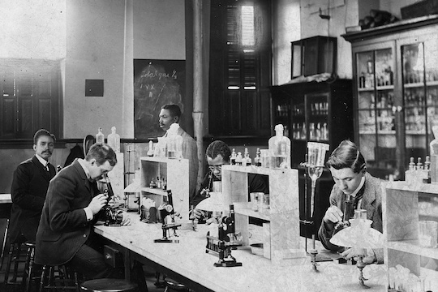
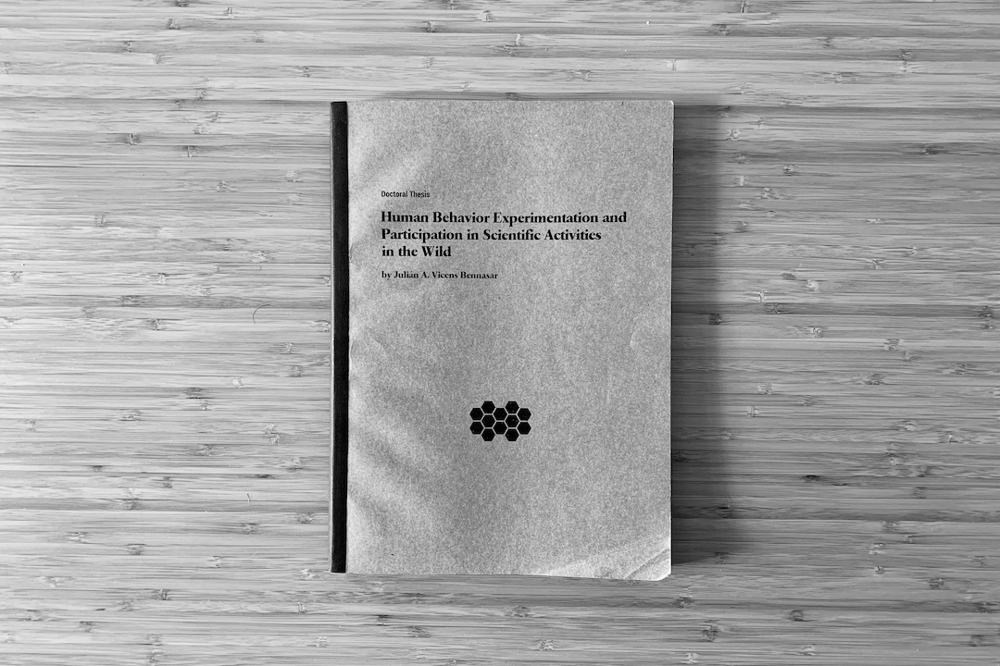
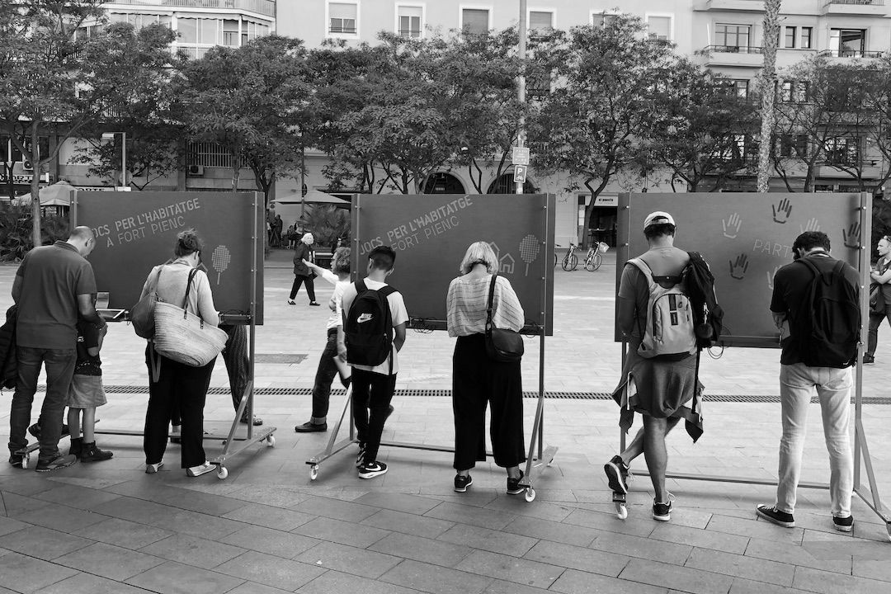
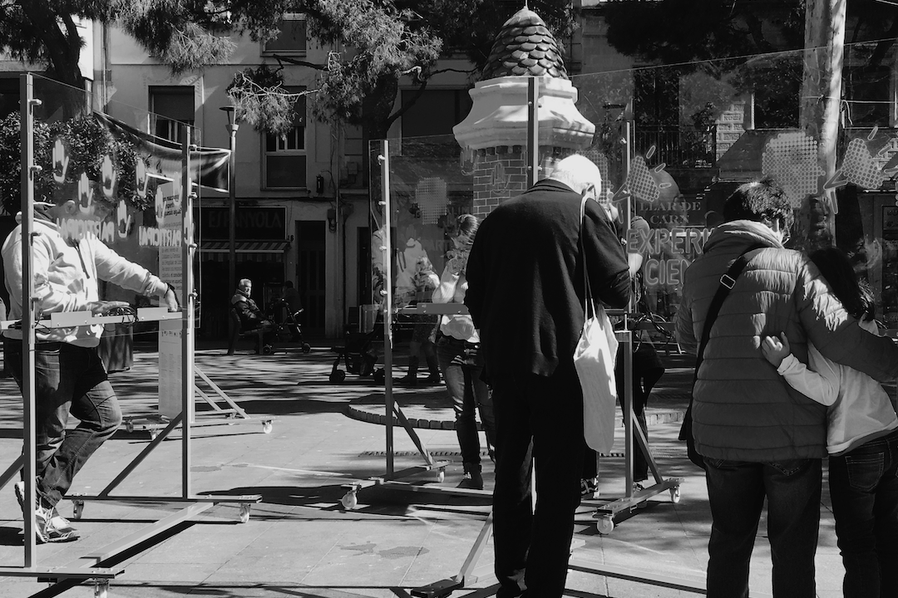
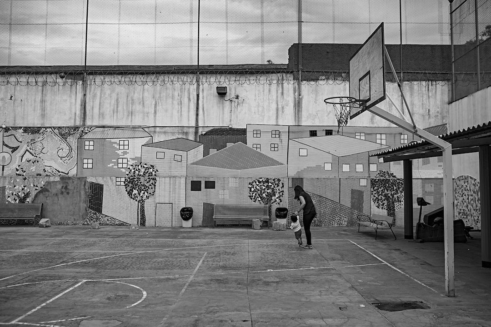
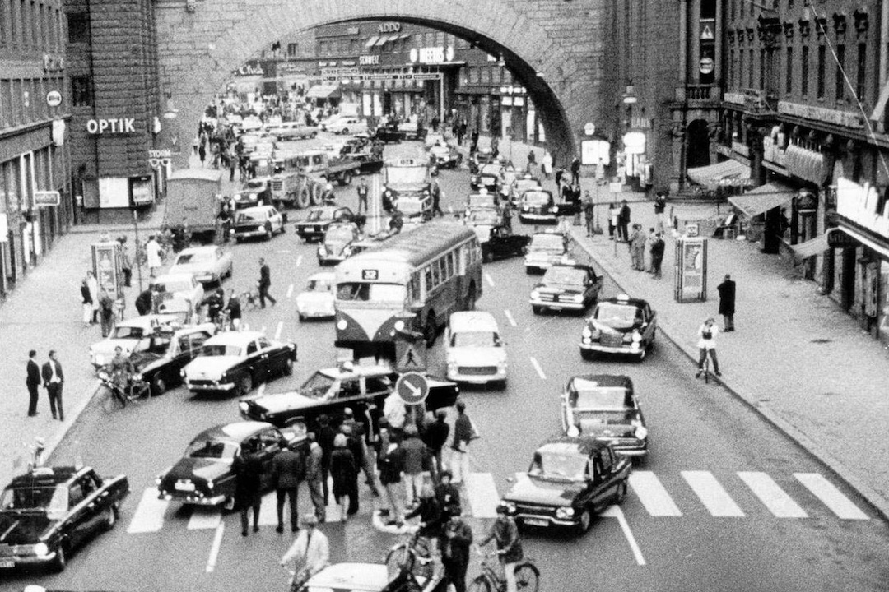
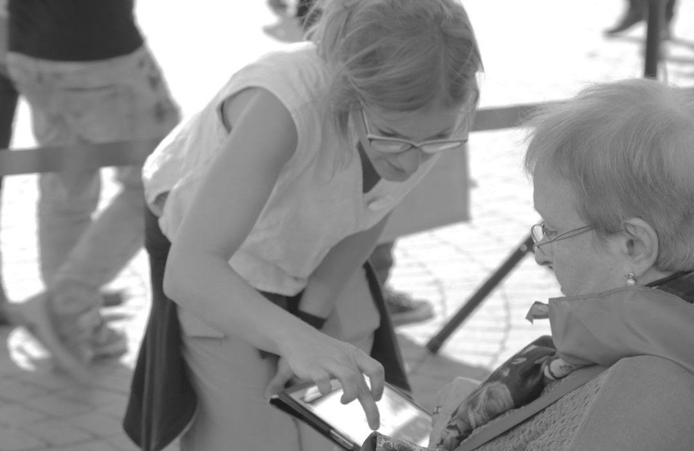
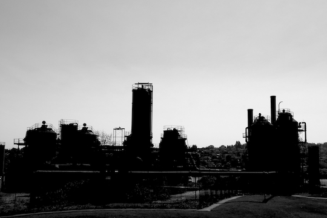
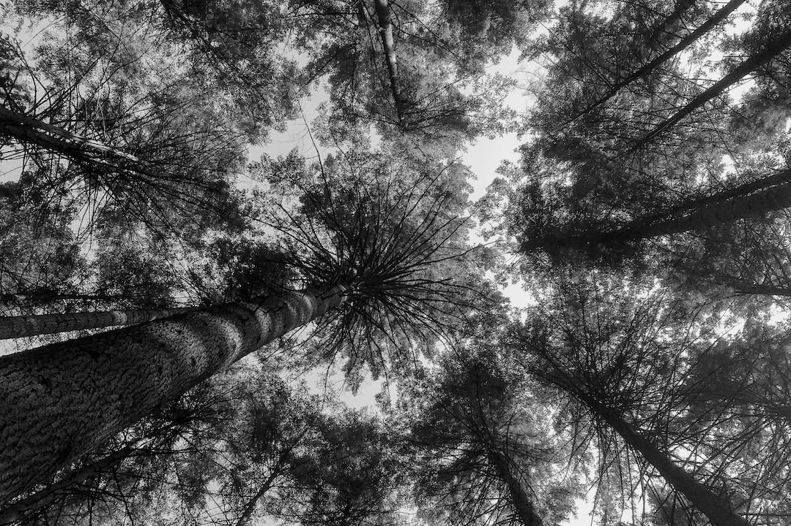
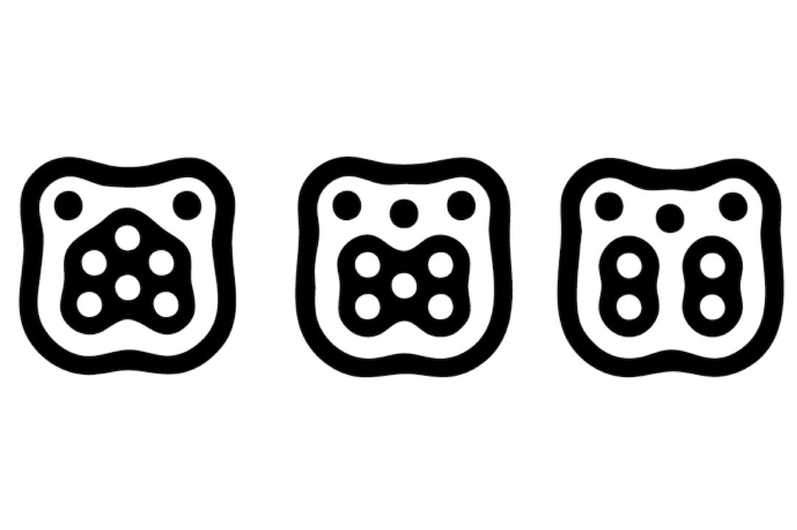

Febraury 1st, 2021
Project
MediaFutures
1st open call

© Marjory Collins | New York Times newsroom (1942)
The 1st open call addressed to startups and artists working on creative data-driven solutions on communication, science, and democracy around misinformation and coronavirus is closed with more than 100 applicants in the three different tracks: Artist for Media, Startups for Citizens, and Startup meets Artist.
The process of reviewing and evaluating the applications is carried out during February. We will evaluate more than 40 projects in the Artist for Media track, selecting the best projects that use data as an art material to explore new ideas and technology to question its impact on individuals and society.

© Debaird | City Lights Bookstore, San Francisco
The book «The Science of Citizen Science» has been finally published with the contribution of over a hundred authors. Personally, I contributed to the chapter «Machine Learning in Citizen Science: Promises and Implications» in which we delve into the application of machine learning in citizen science and into the collaboration between citizens and machines to solve complex problems fairly. In addition to that, I participated in other projects presented in the chapters «Citizen Social Science: New and Established Approaches to Participation in Social Research» and «Participation and Co-creation in Citizen Science».
This book covers all aspects, including the strengths and barriers, that are relevant to fulfill the many expectations of citizen science. It is a wonderful conclusion to four years of intensive exchange and cooperation within a European research network on citizen science in the context of COST Action 15212: Citizen Science to promote creativity, scientific literacy, and innovation throughout Europe.
January 1st, 2021
Project
Human mobility patterns during the pandemic
© Tibidabo | Avió Tibidabo
Human mobility is one of the main proxies for modeling the spreading of epidemics. One of the most important non-pharmaceutical interventions during epidemic outbreaks is the limitation of mobility with the objective to reduce the number of contacts and tackle the virus transmission. However, the application of actual mobility measures is affected by a large number of variables (social, cultural, economic, geographic, and so) and at different scales, from household to nation. This research project is aimed to understand mobility patterns that emerge during the pandemic at the urban scale from a social perspective, with special emphasis on the social implications of public policies.
Update
01/01/21
Mallorca mobility analysis
September 7th, 2020
Project
MediaFutures
© Marjory Collins | New York Times newsroom (1942)
MediaFutures is an H2020 project whose main goal is building a European data innovation hub, including funding, mentoring, and support for entrepreneurial and creative projects to reshape the media value chain through responsible, innovative uses of data. Our main contribution from Eurecat is to make a wide catalogue of open data resources and free open source technologies for data exploitation available. This includes datasets and tools for data collection, exploration and exploitation produced by the project's partners, as well as publicly available resources. Besides, we provide active support of non-technical aspects as well as experiment design and methodology to ensure valid and reliable results from the engagement with data from different sources including social media platforms, citizen science projects, open government and participative democracy platforms, etc. This project was has received funding from the European Union’s Horizon 2020 innovation action programme under grant agreement No. 951962.

© William Edward Burghardt | Bacteriology Lab, Howard University. Washington, D.C. (1900)
Research lines offered to students in the Master of Data Science at Universitat Oberta de Catalunya (UOC) to develop their master's thesis during the academic year 2020/21. The research lines are focused on the aplication of data science techniques to study complex social systems and different aspects of social behaviour by analysing data from urban systems, social networks, citizen science projects and game theory experiments. Projects that expect to develop systems merging artificial intelligence and art are welcomed, specially generative art proposals.
January 1st, 2020
Research Paper

© Martí E. Berenguer | FiraTàrrega
Cooperation in hyper-social spaces is highly conditioned by the gender of the interacting individuals. This experiment, carried out at Fira de Tàrrega in 2017, measures the willingness of people to cooperate, pairing them to take part in the prisoner's dilemma game, outdoors and in the context of an artistic performance. This experiment, performed using participatory research and citizen science principles, shed light on how the other’s gender identity is a relevant factor in terms of cooperation and trust. In hyper-social scenarios, individuals show a pro-social behaviour, especially women, who exhibit high levels of cooperation, trust and ability to guess the others’ behaviour. The complete research paper «Gender-based pairings influence cooperative expectations and behaviours» is publicly available in Scientific Reports and co-authored with Anna Cigarini and Josep Perelló.
November 28th, 2019
Project
© Public Domain | Red Cross Library Service. Brisbane, 1944
Publication of «Citizen Science in Libraries», a crowdsourced toolkit for and by librarians and citizens. Librarians proposed ten multidisciplinary citizen science projects to perform in libraries with library-goers within the specific context of each library. This toolkit was curated in co-creation sessions in the «Citizen Science Laboratory» through workshops facilitated by the members of OpenSystems in order to build a citizens science community around Barcelona libraries. This project was funded by Diputació de Barcelona in the framework of BiblioLab.
November 15th, 2019
Thesis
PhD special prize

© Julián Vicens | Thesis report
«Doctoral Special Prize» awarded to my doctoral dissertation «Human Behaviour Experimentation and Participation in Scientific Activities in the Wild» by Universitat Rovira i Virgili. I would like to thank Jordi Duch and Mercè Gisbert for their supervision, the co-authors of the publications included in the thesis and the committee formed by Marisa Ponti, Frederic Guerrero and Sergio Gomez, who awarded it with the mention "Cum Laude". The work delves into the understanding of social complex systems and studies cooperation in different contexts by means of collective experimentation based on game theory and social dilemmas. The dissertation also digs into the development of platforms to perform participatory and citizen science and the application of machine learning algorithms to unveil behavioural patterns.
October 26th, 2019
Workshop

© Barcelona Ciència | Festa de la Ciència
Presentation of «The Housing Game» results at the Festa de la Ciència in Barcelona by OpenSystems members. «The Housing Game» is a citizen science project aimed to understand the dilemmas that arise in the decision-making process of citizens in the context of the housing market. This project has been co-created with librarians, library-goers and the local community within the BiblioLab program of the Municipal Libraries of the district of Fort Pienc.
October 1st, 2019
Project

© OpenSystems | Games for Housing. Fort Pienc
«Citizen Science in Action» aimed to co-create a citizen science experiment focused on a social concern shared by the community around libraries, for and by library-goers, in three Barcelona municipalities (Granollers, Olesa de Montserrat and Fort Pienc). From this collaborative process emerged the shared concern of access to housing. All the participants formulated and conceptualized an intervention in the public space to collect evidence to answer different research questions. The result was «Jocs per l’Habitatge» («Games for Housing»), an intervention in public spaces which consisted in four days of data collection about different dilemmas that citizens face when citizens and policy-makers intervene in the housing market.

© Library of Congress | New York Public Library, 1918
Series of articles that aim to share citizen science experiences and reflections by the OpenSystems group, which shares its experiences from around the world, many of them unknown in Barcelona. Citizen science involves citizen participation in science, but it also boosts collaboration and impacts in other disciplines. These articles, written collaboratively by the members of OpenSystems, tackle the relation of Citizen Science with Arts, Public Libraries and Community Actions.

© OpenSystems | La Torrassa, L'Hospitalet de Llobregat
«Aigua de Barri» («Neighborhood Water») was a project that consisted of a series of workshops facilitated by OpenSystems members in cooperation with Ítaca, an organization from L’Hospitalet de Llobregat dedicated to out-of-school education for children and young people. The main objective of the project was to perform citizen science activities, as well as to organize a final performance in the public space using social dilemmas and game theory to puzzle over the use of basic resources like water. The project was funded by Fundació Agbar.

© Thomas Vilhelm | Biennal Ciutat i Ciencia
Ephemeral collective research action that aims to understand the interactions occurring in public spaces from a gender perspective. Citizen Social Lab collects data to better understand diverse human interactions in urban contexts in which a given conflict makes us face a social dilemma. This project allows us to research individual conflicts in situations of public violence. «Consciencies» was designed within the framework of the Biennal Ciutat i Ciència, a festival organized by the City of Barcelona, and performed again in the citizen science festival Calidoscopi by OpenSystems, Nus and the feminist students collective of Elisava.
Febraury 13th, 2019
Workshop

© Sebastien Nagy | Barcelona
Citizen science practices have been boosted in urban contexts around the world. Participatory efforts include identification of concerns, definition and design of research, collection of data and the proposals of actions that respond to specific concerns with scientific evidence. This event counted on the insights, among others, of Louis Francis (Mapping for change), who talked about environmental actions and air quality, Shannon Dosemagen (Public Lab), who shed light on community science and collective action, and LeeAnne Walters, who explained the experience of the Flint water crisis supply. These were only some of the interesting talks about citizen science and actions that took place at «. The event was organized by OpenSystems members as part of Biennal Ciutat i Ciència and the Citizen Science COST Action 15212.
February 13th, 2019
Workshop

© Francesc Melcion | Wad-Ras Prison
Workshop carried out at the Barcelona Women’s Penitentiary Centre, popularly known as Wad-Ras prison. The objective was for inmates to discover a series of citizen science projects that can be performed online from anywhere with an internet connection. Some examples are projects to classify galaxies or identify animals in the African Savannah with ZooUniverse, resolve the structure of a protein with Foldit or map a brain in 3D. This workshop also focuses on discussing expertise and non-expertise, interest and passion, and, above all, on how we can build knowledge and transform this learning process into a worthwhile activity. This workshop was part of the Biennal Ciutat i Ciència of Barcelona.
December 1st, 2018
Research Paper

© Julian Vicens | Climate Change Game
Citizen Social Lab is a digital platform used to perform behavioural experiments in the wild following the principles of citizen science. This platform collects data from the interaction between individuals who face a varied set of social dilemmas (public goods games, prisoner’s dilemma, trust game...). The platform is analysed with detail in the paper «Citizen Social Lab: A Digital Platform for Human Behaviour Experimentation Within a Citizen Science Framework» published in PlosOne with data of more than two thousand individuals participating in experiments in the public space. This paper is co-authored with Jordi Duch and Josep Perelló.
November 1st, 2018
Research Paper
© Spencer Tunick | Aletsch, Alps
Social experiment that studies the cooperation around the negotiations against climate change. It was carried out in Barcelona using citizen science methodologies with the participation of 324 individuals. The outlines of the experiment published in PlosOne revealed that inequalities around climate change negotiations are tougher on individuals, societies and organizations with few resources, who are, at the same time, the ones that show higher cooperation levels in relative terms.
September 27st, 2018
Conference

© Jan Collsiö | Dagen H
Talk at the Conference of Complex Systems (Thessaloniki, 2018) within the workshop «Complex systems for the most vulnerable». The talk,
«Addressing social justice and unveiling vulnerabilities through game theory and collective experiments», was focused on presenting the emergency of behaviours around important societal challenges such as climate change and its mitigation actions, public health and the current trend to reinforce care-at-home services, and the health impact on citizens due to strong inequalities in city air quality. All this phenomena was studied by means of a set of lab-in-the-field behavioural experiments coupled with citizen science practices.

© Tasmanian Archive | Teaching Aids Centre, 1951 - 1973
Participation in «STEM4Youth», an H2020 project that aims to promote STEM education through key scientific challenges and to enhance its impact on our life and career perspectives. The project introduced citizen science in schools in a radical manner by performing collective and participatory experiments in Barcelona, Polonia and Greece. These experiments studied public concerns such as gender inequalities, air quality or water pollution, which emerged from co-design sessions with students [final report]. This research is performed by means of behavioural experiments, game theory and using Citizen Social Lab, a participatory platform to perform collective experiments in the wild. This project has received funding from the European Union’s Horizon 2020 research and innovation programme under grant agreement No. 710577.
June 9st-10st, 2018
Workshop

© OpenSystems | Festa de la ciència
Behavioral experiment focused on the study of human behaviour in relation to the air quality of a city. In this experiment, performed on the Festa de la Ciència in Barcelona, citizens of Barcelona participated in a citizen science investigation aimed to research the nitrogen dioxide (NO2) concentration measurements in more than 800 points across Barcelona. Based on these results, the participants had to contribute in a social dilemma to launch a collective action related to air quality.

© Unknow author | Starlings flow
Presentation of our work about social interactions in the mental health care community at the VII Jornada Complexitat: complex systems for theory to data science. The talk «A game theory approach to the mental health community» dig into the behavioural traits of role groups and the social capital in the mental health ecosystem.
March 1st, 2018
Thesis
PhD thesis defense
© Julián Vicens | Thesis report
Defense of my doctoral dissertation «Human Behaviour Experimentation and Participation in Scientific Activities in the Wild» in Spring 2018. The thesis was supervised by Jordi Duch and Mercè Gisbert. This work, developed during four years, delves into the understanding of social complex systems and studies cooperation in different contexts (climate change, mental health care community, etc.) by means of collective experimentation based on game theory and social dilemmas. The dissertation also digs into the development of platforms to perform participatory and citizen science and the application of machine learning algorithms to unveil behavioural patterns. It was successfully defended and awarded with the mention "Cum Laude" by the committee formed by Marisa Ponti, Frederic Guerrero and Sergio Gomez.
February 28th, 2018
Research Paper

© OpenSystems | Mental Health Day, Lleida
Mental disorders have an enormous impact in our society. In «Quantitative account of social interactions in a mental health care ecosystem: cooperation, trust and collective action» we present the results of a suite of games that allow us to probe into different behavioral traits of the mental health care community role groups by means of citizen science practices. The evidence reinforces the idea of community social capital, with caregivers and professionals playing a leading role. Yet, the cost of collective action is mainly supported by individuals with a mental condition - which unveils their vulnerability. We finally point to the conditions under which cooperation among members of the ecosystem is better sustained, suggesting how virtuous cycles of inclusion and participation can be promoted in a "care in the community" framework. This research paper was co-authored with Anna Cigarini, Josep Perelló and Anxo Sanchez.
February 15th, 2018
Project

© Julián Vicens | Gas Works Park, Seattle, USA
«xAire» is a project that proposes a collective measurement of air quality in Barcelona, particularly monitoring air pollution by nitrogen dioxide (NO2), one of the most important pollutants in the city. This project brings together twenty schools in the city of Barcelona from ten districts to install more than 800 sensors that will help to provide a more accurate mapping of air quality in the city. This project is carried out on The City Station, a pop-up environmental health clinic built in the public space that put emphasis on the collective research and public participation in science. This project is possible thanks to the sponsorship of DKV and 4sfera and to the collaboration of Mobile Week Barcelona, ISGlobal, Mapping for Change, OpenSystems, and the participation of 20 schools in Barcelona. The City Station is part of CCCB's exhibition «After the end of the world».
December 1st, 2017
Project

© Julián Vicens | Pacific Spirit Reginal Park, Vancouver. Canada
«Natural Patterns» is a project that delves into the relationship between Science and Nature. By means of a system that promotes the observation of Nature as a canvas to present the research process, we are able to unveil the implications of science in the formation of patterns and their impact, beyond natural science, in art, design, architecture or music.
September 1st, 2016
Research Paper

© OpenSystems | DAU Festival, Barcelona
Lab-in-the-field experiment in which 541 individuals face four different dyadic games with the aim of establishing general behavioral rules dictating individuals’ actions. By analyzing the observations of these simple social situations using machine learning algorithms, we find that a majority of the subjects conform, with a large degree of consistency, to a limited number of behavioral phenotypes: envious, optimist, pessimist, and trustful. The complete results are publised in Science Advances.
December 12th, 2015
Project
The Climate Game
© Spencer Tunick | Aletsch, Alps
«The Climate Game» is a pop-up experiment that allows us to study how individuals cooperate to face a collective risk such as climate change. We propose a classic social dilemma based on cooperative game theory focus on the negotiations to deal with climate change. In this project, we use Citizen Social Lab platform to collect citizens' interactions and participatory science principles to engage citizens in participation. The main experiment was performed at DAU festival, where 324 individuals contributed to their actions. The outlines of the experiment published in PlosOne revealed that inequalities around climate change negotiations are tougher on individuals, societies, and organizations with few resources, who are, at the same time, the ones that show higher cooperation levels in relative terms. The platform, scientific results, data, and codes are publicly available following the open science principles.

© Rae Bathgame | MACBA, Barcelona
«Museum Night Experiment» is a citizen science experiment created to observe, capture and analyze the "cultural behaviour" of attendants to «La Nit dels Museus» in Barcelona («Museums at Night»). The main objective is to analyse the patterns generated by citizens when massively visiting museums and cultural centers in order to understand participation profiles and establish a more efficient relationship between citizens, cultural equipments and the city.
September 1st, 2011
Project

© Julián Vicens | TUIO Fiducials
This project was part of my Engineering Thesis focused on the design and development of a natural user inteface and a tridimensional audio system. The thesis was based in previous works in human computer interaction and audio processing. The final artifact creates a sound experience by means of a system that reacts in real-time to the fiducials placed on a table-top user interface. Each fiducial corresponds to a particular sound represented in a tridimensional environment created on a natural user interface working with TUIO protocols.